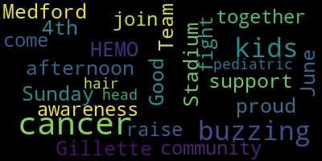

[Burke]: Good afternoon. Medford is proud to support Team HEMO at Gillette Stadium on Sunday, June 4th. Our community has come together to raise awareness and join in the fight against pediatric cancer. I'm buzzing my hair for kids with cancer.
[SPEAKER_03]: Medford is buzzing off for HEMO! About five years ago, I started hearing commercials on the radio about this great cause. I think three, four years ago, I had a student who was personally affected, losing a younger sibling, Hemo, and kind of motivated me to do it that year. I decided to buzz in Hemo's honor. I am donating to team Hemo.
[SPEAKER_01]: Medford is buzzing for Hemo. At Medford, we raise our hats for Hemo. Medford is buzzing for Hemo. We are so proud of our McGlynn students who are buzzing off of HEMO and special thanks to Mr. Petrellis and Mr. Kuzmitz who organizes this event every year. Way to go, McGlynn! I donated to Team HEMO.
[Anthony Petrelis]: Medford is buzzing for HEMO.
[SPEAKER_01]: Medford is buzzing off for HEMO.
[Anthony Petrelis]: Medford is buzzing for HEMO. And I'm donating for HEMO. Medford is buzzing for HEMO.
[SPEAKER_01]: Medford is buzzing off for HEMO.
[Burke]: I'm buzzing my head for kids with cancer.
[Anthony Petrelis]: I'm Anthony Petralos. I'm a fifth grade teacher at the McGlynn Elementary School, and I'm the team captain of Team HEMO this year. This is our fourth year in the One Mission Buzz-Off, which is held at Gillette Stadium, June 4th this year. Four years ago, a third grade student in our school, HEMO of DuFourage, passed away of a real form of spinal cancer. We do it for their family every single year. We get t-shirts. We organize. We get about 15, 20 different people to join the team.
[SPEAKER_01]: We're cutting like knives in a fist fight
|
total time: 0.26 minutes total words: 48  |
|||
{kind=link}